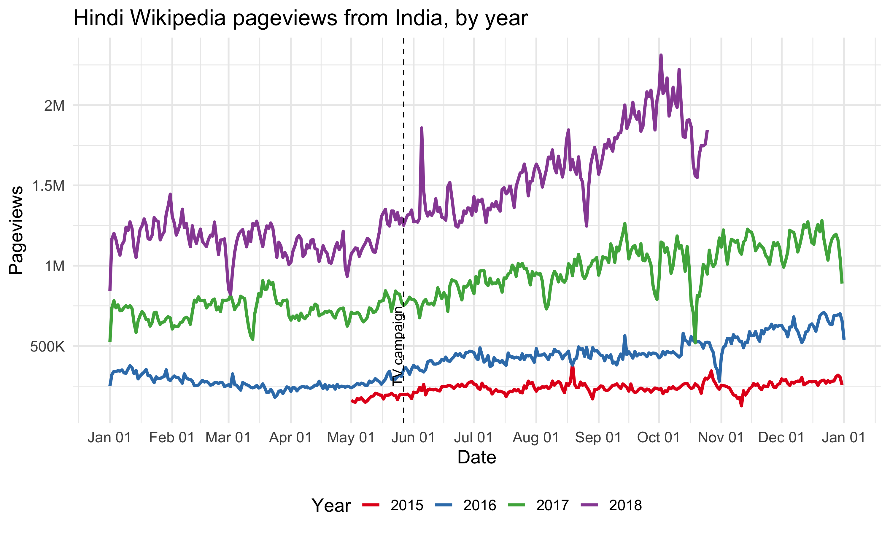
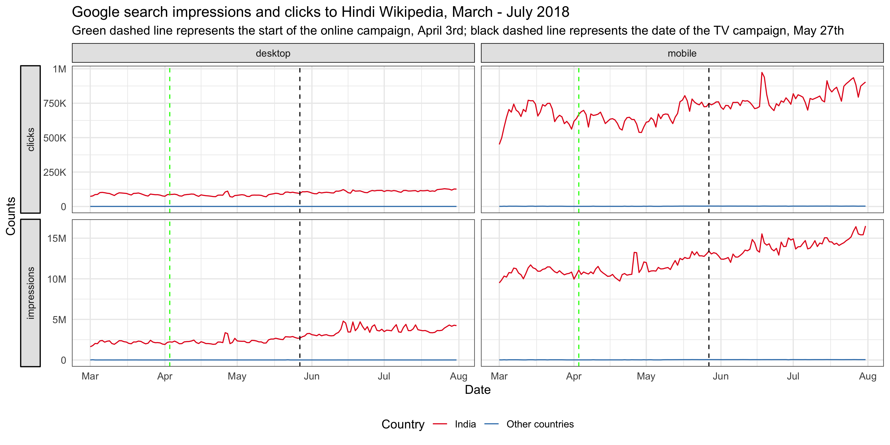
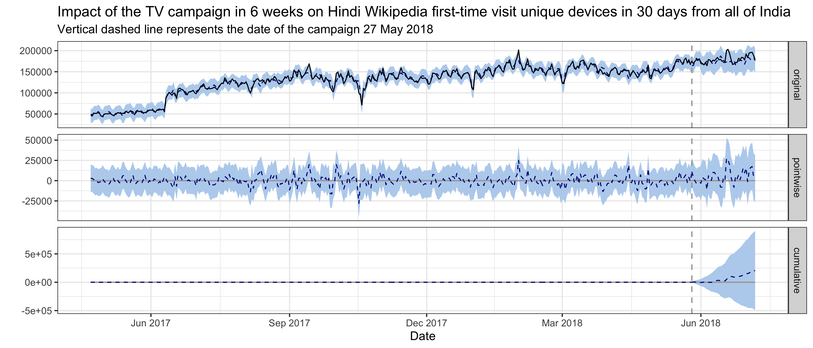
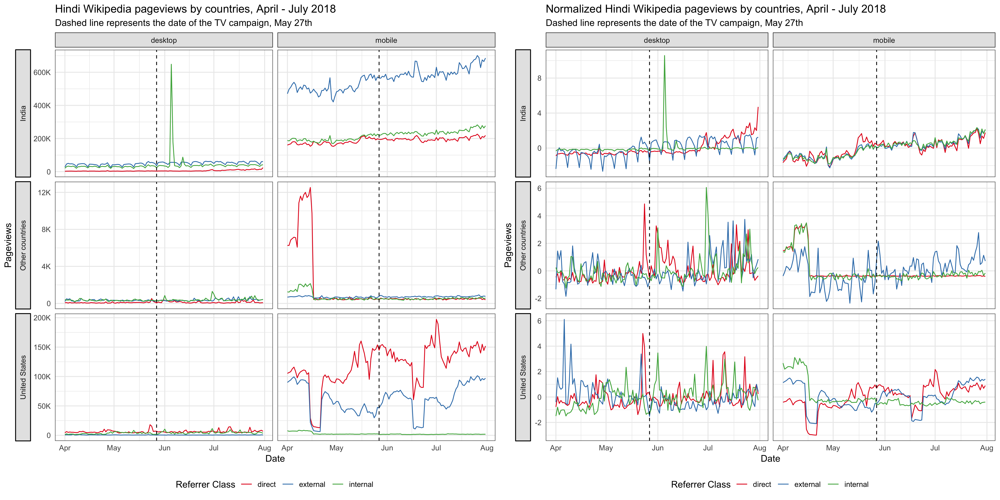

Understand the impact of video campaign on traffic to Hindi Wikipedia
Executive Summary
To improve the recognition of Wikipedia and the understanding of its uses in India, the Wikimedia Foundation started a video campaign to explain and promote Hindi Wikipedia. On April 3 2018, we published and promoted the Ektara video on digital channels targeting Madhya Pradesh, which was live for 3 weeks and gathered 2.61 million views. On May 27 2018, a second TV push to the whole country happened during a major Cricket event (on DD Sports during the Indian Premier League finals), which reached 1.37 million viewers.
In this analysis, we use Bayesian structural time series models to model Hindi Wikipedia pageviews and unique devices from Madhya Pradesh or India, and estimate the causal impact of the online and the TV campaign. The effect of the online campaign on pageviews from Madhya Pradesh is negative with its 95% credible interval included 0, meaning the online campaign did not have a statistically significant effect. The impact of the TV campaign on pageviews and unique devices from all of India is positive but not statistically significant neither. Overall, we don’t think the signal is strong enough to conclude that our campaign is a success.
{ Phabricator Task | Analysis Codebase }
1 Background
In India, only 33% of Hindi internet users have heard of Wikipedia 1. Meanwhile, internet access is growing 20%+ per year across India 2 and Hindi online content consumption is growing 94% per year 3, but there are only 120,000 Wikipedia articles in Hindi and many users don’t know Hindi content is available. In July 2017, the Wikimedia Foundation and the Hindi Wikimedians User Group began collaborating to reach “New Readers” in India (see the program page). The goal is to increase awareness and drive new usage of Wikipedia among Hindi speaking internet users.
To explain and promote Hindi Wikipedia (hi-wiki), Wikimedia foundation started a video campaign in April 2018. On April 3 2018, we published and promoted the Ektara video on YouTube and Facebook targeting Hindi internet users in Madhya Pradesh who have not heard of Wikipedia. The online promotion ran for 3 weeks and the video gathered 2.61 million views. This was followed by a second push over TV during a major Cricket event (on DD Sports during the Indian Premier League finals) on 27 May 2018 to the whole country, which reached 1.37 million viewers 4. In this report, we analyze the impact of this video campaign on the traffic to Hindi Wikipedia and hope to establish a workflow of intervention analysis for other campaigns in the future.
2 Data
In order to measure the traffic to Hindi Wikipedia, we chose the pageviews and unique devices to Hindi Wikipedia as our test metrics. As the online video campaign was targeting the Madhya Pradesh region while the TV campaign was broadcast nationwide, the metrics we used were aggregated at the state and the country level respectively when analyzing the impact of these two channels 5.
Since Google is the most popular search engine in India 6, we also looked at the Google trends 7, and impressions and clicks counts of Hindi Wikipedia on Google (data was obtained from Google search console).
3 Exploratory data analysis
3.1 Online campaign
For the online campaign, there is a link to the Hindi Wikipedia main page under the video. After the promotion started on April 3rd, we saw some spikes in the main page pageviews from Madhya Pradesh on mobile platforms (mobile web or mobile app). External referred pageviews contribute the most to these spikes and they are users who clicked through the links most likely. There are also some spikes in direct pageviews, which means more users type in the URL or click on their bookmark to visit the main page during the campaign. We also noticed some smaller spikes in external referred pageviews from other states, which means the video was shared to users from other states in India. According to T185584, the online campaign resulted in ~1.2k clickthroughs/day on average during the campaign period.

Since our goal is to improve recognition of Wikipedia and understanding of its uses, we care more about the total pageviews to all pages of Hindi Wikipedia, not just the main page. Although the Hindi Wikipedia’s pageviews from Madhya Pradesh has been increasing year-over-year, we didn’t see any significant bumps during the online campaign. There seems to be a decrease during the period, but it’s likely a seasonal trend. For the pageviews to other wikis and Google trends from Madhya Pradesh, we didn’t see any increase during the online campaign period neither (see the appendix).

3.2 TV campaign
Since the TV campaign was broadcast nationwide, we looked at the Hindi Wikipedia pageviews from the whole country. Although the pageviews has been increasing year-over-year, we didn’t see any significant bumps on the day of the TV promotion. And the spike appeared several days after the promotion came from an internal referred traffic spike. Similarly, we didn’t see any bumps in the number of unique devices to Hindi Wikipedia from India on or after the day of the TV promotion. See the appendix for more breakdowns.


There’s no significant bumps in Google search impressions and clicks to Hindi Wikipedia on or after the day of the TV promotion neither.

4 Methods
In the last section, we didn’t see any significant bumps in traffic after both campaigns, but it’s possible that the campaign had some long term impact on the traffic to Hindi Wikipedia, e.g. Hindi speaking internet users are more likely to clickthrough when they see Wikipedia on their search results pages. This kind of long term impact is what we care about most in this project – improving the recognition of Wikipedia and the understanding of its uses.
In order to assess this hypothesis, we adopted an model-based approach to estimate the causal effect of the campaign on the pageviews and unique devices time series. With our test time series (pageviews and unique devices in Madhya Pradesh/India) as the response variable, and a set of control time series (pageviews and unique devices in non-affected regions, as well as other covariates) as predictors, we constructed a Bayesian structural time series model. This model was then used to predict the counterfactual, i.e., how the response metric would have evolved after the intervention if the intervention had never occurred. We then calculated the difference between the synthetic counterfactual control series and the observed test series for the post-intervention period (we chose 6 weeks in this analysis) – which is the estimated impact of the campaign – and gauge its uncertainty by computing the posterior interval. We used the R packages “bsts” (Scott et al., 2018) and “CausalImpact” (Brodersen et al., 2017)8 for modeling and inference.
4.1 Test and control series
The approach we described above is based on the following assumptions:
- There is a set control time series that were themselves not affected by the intervention. If they were, we might falsely under- or overestimate the true effect. Or we might falsely conclude that there was an effect even though in reality there wasn’t.
- The relationship between covariates and treated time series, as established during the pre-period, remains stable throughout the post-period.
Therefore, we chose these test and control series to analyze the online and TV campaign:
- Online campaign: We used the Hindi Wikipedia pageviews from Madhya Pradesh as the test series, and used Hindi Wikipedia pageviews from other India states and pageviews to other wikis 9 from other India states as the control series. We excluded the pageviews to other wikis from Madhya Pradesh in the set of control series because most people in India are multilingual, if our brand awareness was affected by the campaign, the impact would likely be revealed on other wikis’ traffic from the target region as well. Additionally, we included the daily number of internet subscribers in Madhya Pradesh as a covariate, which is linearly interpolated from a quarterly series reported by Telecom Regulatory Authority of India 10. We also analyzed a subset of the test and controls series – the pageviews referred by search engines and external websites.
- TV campaign: We used the Hindi Wikipedia pageviews and unique devices from India as the test series, and used pageviews and unique devices from other countries 11 to Hindi Wikipedia and other wikis as the control series. For the same reason mentioned above, we excluded the pageviews and unique devices to other wikis from India in the set of control series. Additionally, we included the daily number of internet subscribers in India as a covariate, which is linearly interpolated from a quarterly series reported by Telecom Regulatory Authority of India. We also analyzed a subset of the test and controls series – the pageviews referred by search engines and external websites and the unique devices that visit our sites for the first time in 30 days (without cookies).
The authors of the CausalImpact library we use for estimating the models suggest using 3-50 covariates 12. Thus, for models in this work where we have hundreds of control series—e.g., many combinations of different regions and language editions—we use correlation and dynamic time warping (DTW) algorithms with pre-intervention data to prescreen and trim the list of control series before feeding them into the BSTS model.
4.2 Model selection
Before fitting bayesian structural time series model on the whole pre-intervention data set, we perform cross validation to choose the best model configuration with time series before the intervention. We used 10-fold cross validation with 6 weeks in each fold, then compute and compare the mean average percent error (MAPE), root mean square error (RMSE) and R squared. To prevent the model from picking up spurious impact, we also computed the imaginary causal impact during validation period. We compared the estimated impact and its credible interval (the smaller the better), and we expected not to find a significant effect in the validation period, i.e., counterfactual estimates and actual data should agree reasonably closely.
We tried different combinations of the following model configuration:
- Trend model: For the trend component, we tried 1) local level trend 2) local linear trend, 3) semi-local linear trend, 4) a static intercept term.
- Pre-intervention period: Since there might be different factors influencing the relationship between covariates and treated time series, we also explore four different pre-intervention period length: 12 weeks, 18 weeks, 183 days and 400 days.
Besides the above model parameters selected via grid-search, for each model in this work, we include a weekly and a monthly annual seasonality component, and a regression-based holiday component (including the following Hindu holidays: Diwali, Raksha Bandhan, Holi, Dussehra and New year).
5 Results
For both the online and TV campaigns for Hindi Wikipedia, we do not detect a significant change in page views and unique devices.
5.1 Online campaign
For Hindi Wikipedia pageviews from Madhya Pradesh, the best model has a local level trend. The pre-intervention period is 400 days, which means the time series starts on 27 February 2017 and includes daily page view data through 14 May 2018, where the intervention occurred on 3 April 2018. The validation statistics associated with the model provide an indication of how effective the model was at predicting the pre-intervention time series. With 10-fold cross validation and prediction evaluated on 6 weeks of daily page views (from the end of the pre-intervention period), the holdout mean absolute percentage error (MAPE) of this model is 8.79%.
In the plot below, the first panel shows the data (black solid line) and counterfactual prediction (blue dashed line) for the post-intervention period. The second panel shows the difference between observed data and counterfactual predictions. This is the point-wise causal effect, as estimated by the model. The third panel adds up the point-wise contributions from the second panel, resulting in a plot of the cumulative effect of the intervention. Shaded areas indicate 95% credible intervals. This graph shows that no significant impact on page views was detected following the intervention. While there does appear to be a downward trend in page views, zero change is still within the 95% credible interval. Page views to hi-wiki from the states of Rajasthan and Chhattisgarh, both of which border Madhya Pradesh, are the most predictive control series in the model, with average standardized coefficients of 0.25 and 0.13 respectively. The posterior probabilities that their coefficients are different from zero are greater than 95%.

For Hindi Wikipedia external referred pageviews from Madhya Pradesh, the best model has a local level trend and the pre-intervention period is 400 days. The average holdout MAPE from cross-validation is 7.64%. This following graph shows that no significant impact on external referred page views was detected following the intervention. Page views to hi-wiki from the states of Rajasthan and Chhattisgarh are the most predictive control series in the model, with average standardized coefficients of 0.23 and 0.13 respectively. The posterior probabilities that their coefficients are different from zero are greater than 95%.

5.2 TV campaign
5.2.1 Pageviews
For Hindi Wikipedia pageviews from India, the best model has a semi-local linear trend and the pre-intervention period is 400 days, which means the time series starts on 22 April 2017 and includes daily page view data through 7 July 2018, where the intervention occurred on 27 May 2018. The average holdout MAPE from cross-validation is 10.61%. This following graph shows that no significant impact on page views was detected following the intervention. Page views to Hindi Wikipedia and Hindi Wikibooks from the United states are the most predictive control series in the model, with average standardized coefficients of 0.25 and 0.2 respectively. The posterior probabilities that their coefficients are different from zero are greater than 95%.

For Hindi Wikipedia external referred pageviews from India, the best model has a static intercept term and the pre-intervention period is 400 days. The average holdout MAPE from cross-validation is 10.22%. This following graph shows that no significant impact on external referred page views was detected in the first 3 weeks following the intervention. There was a bump in the 4th week after the campaign, but it is most likely to be the result of an unknown event. Overall, we did not detect significant impact in 6 weeks. The number of internet subscribers in India, hi-wiki page views from the United States, Bengali Wikipedia page views from Bangladesh and English Wiktionary pageviews from Nepal are the most predictive control series in the model, with an average standardized coefficient of 0.84, 0.35, 0.14 and 0.16 respectively. The posterior probabilities that their coefficients are different from zero are greater than 95%.

5.2.2 Unique Devices
For Hindi Wikipedia unique devices from India, the best model has a semi-local linear trend and the pre-intervention period is 400 days, which means the time series starts on 22 April 2017 and includes daily unique devices counts through 7 July 2018, where the intervention occurred on 27 May 2018. The average holdout MAPE from cross-validation is 8.47%. This following graph shows that no significant impact on unique devices was detected following the intervention. Unique devices to Hindi Wikipedia from the United states and unique devices to English Wikipedia from Nepal are the most predictive control series in the model, with average standardized coefficients of 0.18 and 0.19 respectively. The posterior probabilities that their coefficients are different from zero are greater than 95%.

For Hindi Wikipedia first-time visit unique devices in 30 days from India, the best model has a local level trend and the pre-intervention period is 400 days. The average holdout MAPE from cross-validation is 9.09%. This following graph shows that no significant impact on first-time visit unique devices was detected following the intervention. Unique devices to English Wikipedia from Nepal is the most predictive control series in the model, with average standardized coefficients of 0.25. The posterior probability that its coefficient is different from zero is greater than 95%.

6 Discussion
In this work, we focus only on the cumulative effect by the end of the post-intervention period–its existence and magnitude–without discussing the temporal evolution of an impact. In practice, how an effect evolves over time, especially its onset and decay structure, is often a key question as well. The point-wise effect from BSTS reflects the temporal evolution and future implementation should consider analyzing this result.
Small volume Wikipedia editions such as hi-wiki are more sensitive to undetected bot behavior, which can cause anomalies in page view data. Anomalies in the prediction or post-intervention period would increase the error rate of validation, or the model might detect an impact that is unrelated to the known intervention. When the number of control series is very large, removing outliers manually is not feasible and thus requires a robust algorithm to detect and adjust outliers while preserving those known “outliers” such as holiday effects. It is possible that further pre-processing would also provide benefits–e.g., including more holidays, removing seasonal patterns in predictors before fitting the model.
Since bayesian structural time series models are very computationally expensive, we didn’t tune all the hyperparameters exhaustively (e.g. prior standard deviation, length of pre-intervention period, the expected model size). In the future, we should consider using some hyperparameter optimization methods to select the best model parameters more effectively. Additionally, as the real-life time series are not stationary while many of them also contain structural changes, an ensemble model is more robust and may minimizes the chance of any catastrophically bad forecast13.
There are some known issues in our data accuracy. First, the Wikimedia Foundation is using a paid IP geolocation databases Maxmind to identify where our users coming from. It’s known that the databases is not very reliable for anything below country-level (see wikitech for more details) since 2014. Although MaxMind may have improved its accuracy since then, we are not sure at this moment. Second, Google Web Light, a service transcodes and hosts our pages on slow mobile connections, has been launched in India since 2015. It has lead to the inaccuracy in our pageviews and unique devices counts, and we will estimate its impact and fix this issue in our data in the future.
Lastly, although more thorough research is needed, we have seen companies conducting intervention experiment in a longer period and splitting the control and treated regions/populations more carefully 14. For example, we can rank the regions by pageviews, then pairs of regions are randomly assigned to treatment and control groups. We expect that when multiple regions are assign to receive treatment, the random noise in the metrics would be mitigated.
7 Reference
7.1 Reading
- Scott, S. L., and Varian, H. R. (2014). Predicting the present with bayesian structural time series. International Journal of Mathematical Modelling and Numerical Optimisation, 5(1/2), 4. http://doi.org/10.1504/ijmmno.2014.059942
- Brodersen, K. H., Gallusser, F., and Koehler, J. (2015). Inferring causal impact using Bayesian structural time-series models. The Annals of Applied Statistics. http://doi.org/10.1214/14-AOAS788, http://research.google.com/pubs/pub41854.html
- Larsen, K. (2016, January 13). Making Causal Impact Analysis Easy [Blog post]. Retrieved from http://multithreaded.stitchfix.com/blog/2016/01/13/market-watch/
- Larsen, K. (2016, April 21). Sorry ARIMA, but I’m Going Bayesian [Blog post]. Retrieved from http://multithreaded.stitchfix.com/blog/2016/04/21/forget-arima/
- Scott, S. L. (2017, July 11). Fitting Bayesian structural time series with the bsts R package [Blog post]. Retrieved from http://www.unofficialgoogledatascience.com/2017/07/fitting-bayesian-structural-time-series.html
- Census of India: Comparative speaker’s strength of Scheduled Languages-1951, 1961, 1971, 1981, 1991, 2001 and 2011. http://www.censusindia.gov.in/2011Census/C-16_25062018_NEW.pdf
7.2 Software
- R Core Team (2018). R: A Language and Environment for StatisticalComputing. R Foundation for Statistical Computing, Vienna,Austria. https://www.R-project.org/
- Scott SL (2018). bsts: Bayesian Structural Time Series. Rpackage version 0.8.0, https://CRAN.R-project.org/package=bsts
- Giorgino T (2009). “Computing and Visualizing Dynamic Time WarpingAlignments in R: The dtw Package.” Journal of StatisticalSoftware, 31(7), 1-24. http://www.jstatsoft.org/v31/i07/
- Tormene P, Giorgino T, Quaglini S, Stefanelli M (2008). “MatchingIncomplete Time Series with Dynamic Time Warping: An Algorithm andan Application to Post-Stroke Rehabilitation.” ArtificialIntelligence in Medicine, 45(1), 11-34. doi:10.1016/j.artmed.2008.11.007 (URL:http://doi.org/10.1016/j.artmed.2008.11.007).
- Brodersen KH, Gallusser F, Koehler J, Remy N, Scott SL (2014).“Inferring causal impact using Bayesian structural time-seriesmodels.” Annals of Applied Statistics, 9, 247-274. http://research.google.com/pubs/pub41854.html
- Wickham H (2016). ggplot2: Elegant Graphics for Data Analysis.Springer-Verlag New York. ISBN 978-3-319-24277-4, http://ggplot2.org
- Allaire J, Xie Y, McPherson J, Luraschi J, Ushey K, Atkins A,Wickham H, Cheng J, Chang W (2018). rmarkdown: Dynamic Documentsfor R. R package version 1.10, https://CRAN.R-project.org/package=rmarkdown
- Xie Y (2018). knitr: A General-Purpose Package for Dynamic ReportGeneration in R. R package version 1.20, https://yihui.name/knitr/
- Xie Y (2015). Dynamic Documents with R and knitr, 2nd edition.Chapman and Hall/CRC, Boca Raton, Florida. ISBN 978-1498716963, https://yihui.name/knitr/
- Xie Y (2014). “knitr: A Comprehensive Tool for ReproducibleResearch in R.” In Stodden V, Leisch F, Peng RD (eds.),Implementing Reproducible Computational Research. Chapman andHall/CRC. ISBN 978-1466561595, http://www.crcpress.com/product/isbn/9781466561595
8 Appendix
8.1 Graphs from exploratory data analysis





How we’re building awareness of Wikipedia in India: https://blog.wikimedia.org/2018/04/03/building-awareness-wikipedia-india/↩
https://economictimes.indiatimes.com/tech/internet/hindi-content-consumption-on-internet-growing-at-94-google/articleshow/48528347.cms↩
TV data was collected by Eurodata TV via BARC in India.↩
Because of our 90-days data retention policy, we cannot recover the webrequest data back in April and get the unique devices counts by state.↩
Search engine market share in India: http://gs.statcounter.com/search-engine-market-share/all/india↩
We used the search terms: hindi wikipedia + wikipedia + विकिपीडिया + vikipeedyia↩
We make some changes to the package to use it with our custom BSTS model. See https://github.com/chelsyx/CausalImpact .↩
Top 10 wiki projects in India or Madhya Pradesh with the most pageviews, and Wikipedia of major Indian languages spoken by more than 4% of the population (see 2011 census of India).↩
https://www.trai.gov.in/release-publication/reports/performance-indicators-reports↩
Countries that contribute more than 5% of Hindi Wikipedia page views, countries whose official language is Hindi (see the list of languages by the number of countries in which they are recognized as an official language), and other nearby countries.↩
https://stats.stackexchange.com/questions/162930/causalimpact-should-i-use-more-than-one-control/163554#163554↩
Our quest for robust time series forecasting at scale [Blog post]. https://www.unofficialgoogledatascience.com/2017/04/our-quest-for-robust-time-series.html↩
Vaver, J. and Koehler, J. (2011). Measuring ad effectiveness using geo experiments. Technical report, Google Inc.↩